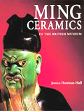

| |

Featured Book
Ming Ceramics in The British Museum
The British Museum's outstanding collection of Ming ceramics is now published for the first time in its entirety. Nearly a thousand items are illustrated, identified, dated and discussed, incorporating the most up-to-date archaeological discoveries and new scientific research.

Jessica Harrison-Hall, The British Museum Press, 2001
ISBN: 0 7141 1488 X
Buy |
|
British Museum Publications:
Recommended reading:
- J. Rawson (ed.), The British Museum Book of Chinese Art (BMP, 1992)
This book provides a comprehensive survey of Chinese Art from the Neolithic to the Modern Period. Focussing on objects in the British Museum collection, chapters cover the topics of bronze and jade, painting, calligraphy and sculpture, ceramics and the decorative arts. Full summaries of archaeological and Buddhist sites, historical surveys, studies of traditional architecture and painters are also included along with an illustrated glossary of terms.
- G. Barrass, The Art of Calligraphy in Modern China (BMP 2002)
- J. Carswell, Blue and White: Chinese Porcelain around the World (BMP, 2000)
- J. Harrison-Hall, Ming Ceramics in the British Museum (BMP, 2001)
- C. Michaelson, Gilded Dragons: Buried treasures from China's golden age (BMP, 2000)
- J. Rawson, Chinese Jade from the Neolithic to the Qing (BMP, 1995)
- J. Rawson, Chinese Ornament: The Lotus and the Dragon (BMP, 1994)
- J. Rawson, Mysteries of Ancient China: New Discoveries from the Early Dynasties (BMP, 1996)
- S. Vainker, Chinese Pottery and Porcelain: from Prehistory to the Present (BMP, 1991)
Books for Children: Ancient China
Recommended reading:
- A. Cotterell, Eyewitness Guide: China (Dorling Kindersley, 1994)
This book introduces the history and culture of China, richly illustrated with objects in the British Museum collection.
- S. Mamdani, Traditions from China (Wayland, 1998)
- B. McKillop, Great Civilizations: Ancient China (Aladdin Books, 1987)
- R. Nicholson & C. Watts, Ancient China (Two-Can Publishing, 1991)
- J. Clements, Chinese Life (Snapping Turtle Guide, 2000)
- P. Steele, Step into the Chinese Empire (Lorenz Books, 1998)
- V. Tao, Exploration into China (Belitha Press, 1995)
Video:
- China: Fun and firecrackers ( Channel 4 Learning, 2000)
Myths and Folktales:
- C. Birch, Tales from China (Oxford University Press, 2000)
- A. Birrell, An Introduction to Chinese Mythology (John Hopkins University Press,1999)
- A. Birrell, Chinese Myths (BMP, 2000)
- F. Huxley, The Dragon (Thames and Hudson, 1997)
- S. Pirotta, Stories from China (Wayland, 2000)
- P. Welch, Chinese New Year (Oxford University Press, 1997)
- L. Yep, The Dragon Prince (Harper Collins, 1997)
- T. Zhan, Legends of Ten Chinese Traditional Festivals (Dolphin Books 1997)
KS3 History:
- J. Brooman, Imperial China (Longman, 1991)
- C. Gleisner, Imperial China (Oxford University Press, 2000)
- H. Martell, Imperial China (Evans Brothers Limited, 1998)
- A. Paludan, Chronicle of the Chinese Emperors (Thames and Hudson, 1998)
- F. Reynoldson, Imperial China (Heinemann Educational, 1991)
KS3/4 Art and Design:
- J. D'Addetta, Treasury of Chinese Design Motifs (Dover Publications, 1991)
GCSE History:
- C. Mackerras, China in Transformation, 1900-1949 (Longman, 2000)
- E. Moise, Modern China (Longman, 2000)
- H. Ward, China in the Twentieth Century (Heinemann Educational, 1990)
- D. Heater, Our World this Century (Oxford University Press, 2000)
|
|


Blue and white porcelain fish dish, from Jingdezhen, Jiangxi province, southern China, Yuan dynasty, 14th century AD. |